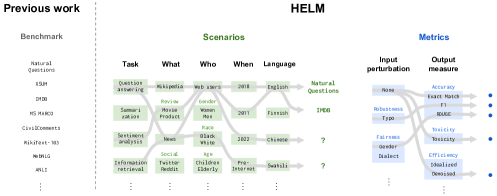
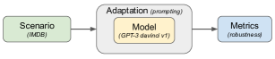

知识广度MMLU / C-Eval
评估基准
榜单分数涨了 20 分，产品体验却没变好——这不是偶然。评估基准测的是模型在特定格式、特定领域、特定难度分布下的表现，和真实使用之间存在系统性 gap。这一页拆解主流基准覆盖了什么、漏掉了什么，以及为什么刷榜不等于变强。
一图看懂
评估基准不是一把尺子，而是一组不同刻度的量具。每把量具只量一个维度，而且都有盲区。真正的问题不是"分数多少"，而是"这个分数在量什么、没量到什么"。
- 推理深度GSM8K / MATH / GPQA代码能力HumanEval / SWE-bench多模态与 AgentMMMU / GAIA数据污染训练集泄漏难度饱和天花板效应格式偏差多选题 vs 生成分布过窄覆盖不了真实场景四大能力维度
- 四大失效模式
- 四大能力维度暴露
能力维度地图
选基准之前，先回答一个问题：你想知道模型在哪方面行不行。一个"MMLU 85 分"的模型，可能数学推理还不如一个"MMLU 70 分"的模型。原因很简单——它们测的根本不是同一件事。
大模型评估大致分为四个维度，每个维度有各自的代表性基准和典型失效模式：
| 维度 | 测什么 | 代表性基准 | 典型失效 |
|---|---|---|---|
| 知识广度 | 世界知识、学科常识 | MMLU / MMLU-Pro / C-Eval / CMMLU | 多选题格式偏差、知识截止日期 |
| 推理深度 | 数学、逻辑、科学推理 | GSM8K / MATH / GPQA / ARC | 难度饱和、答案可猜测 |
| 代码能力 | 函数级生成、仓库级开发 | HumanEval / MBPP / LiveCodeBench / SWE-bench | 测试用例覆盖不足、静态 vs 动态 |
| 多模态与 Agent | 图文理解、多步任务执行 | MMMU / GAIA / BrowseComp | 任务设计偏见、评估成本高 |
一句话直觉
基准就像体检指标——血压正常不代表心脏没问题，MMLU 高分不代表模型好用。每个基准只覆盖一个切面，多维度交叉看才有意义。
评估指标手算：准确率、F1 与 pass@k
想判断一个学生学得怎么样，光看"他考了多少分"不够，还得知道"这个分数是怎么算出来的"。评估指标就是那套算分规则——同一批模型回答，换一套规则算，会得出完全不同的结论。新手最容易在这一步踩坑：先学会手算指标，再去看任何榜单，否则你看到的只是一串没有分母的分数。
分类任务：准确率、精确率、召回率、F1
评测里最常见的算分规则来自二分类（是/否）判断。先认识四个基本量，它们的名字永远记不住，但可以用一个体检类比钉死：把"模型判断有风险"当作阳性，那么 TP（真正例）是"说有风险、确实有风险"，FP（假正例）是"没病被吓一跳"（误报），TN（真负例）是"说没风险、确实没有"，FN（假负例）是"有病没查出来"（漏诊）。查癌症时最怕 FN，漏诊要命；查垃圾邮件时更讨厌 FP，误删重要邮件比多收几封垃圾更糟。选指标之前先想清楚你的业务最不能容忍哪一格。
核心主题分类评估四格
01TP 真正例
- 预测是 实际也是
- 精确率与召回率的分子
- 说对
02FP 假正例
- 预测是 实际不是
- 误报 虚惊一场
- 拖低精确率
03FN 假负例
- 预测不是 实际是
- 漏诊 最危险
- 拖低召回率
04TN 真负例
- 预测不是 实际不是
- 说对
- 只进准确率分子
四个指标的定义与直觉：准确率（accuracy） = (TP+TN)/总数，即全部判断里答对的比例，最容易算也最容易骗人；精确率（precision） = TP/(TP+FP)，回答"模型说是的里面，有多少真的是"；召回率（recall） = TP/(TP+FN)，回答"实际是的里面，模型找回了多少"；F1 = 2×精确率×召回率/(精确率+召回率)，把两者做调和平均——只要有一方拖后腿，F1 就明显吃亏。
手算一遍。假设评测集 100 道二分类题，模型预测"是"的有 60 道，但标准答案里只有 40 道是"是"。进一步看，TP=30、FP=30、TN=30、FN=10。于是：
- 准确率 = (30+30)/100 = 0.60——六成答对，看起来"还行"；
- 精确率 = 30/(30+30) = 0.50——它说的每 2 个"是"里有 1 个是错的，误报很重；
- 召回率 = 30/(30+10) = 0.75——真正有风险的 40 个它找回了 30 个；
- F1 = 2×0.50×0.75/(0.50+0.75) = 0.75/1.25 = 0.60。
注意：这里准确率和 F1 恰好都是 0.60，但揭示的信息完全不同。在类别不平衡时（比如 90% 都是"否"），准确率的欺骗性被放大到极致——模型只要全部回答"否"，就能拿到 90% 的准确率，而召回率直接归零。所以凡是看到"准确率 90%+"，第一反应都该是问一句：类别平衡吗？分母是什么？
生成式任务：精确匹配与 pass@k
开放式生成任务的算分规则更微妙。最简单的叫精确匹配（exact match）：生成文本与参考答案逐字一致才算对。这对翻译、摘要这类输出空间巨大的任务过于严苛——意思对了、措辞不同也算错。而代码任务则发展出了专门的指标 pass@k，它回答的问题是："如果我们允许模型对同一道题生成 k 个候选，至少有一个能通过测试的概率是多少？"这模拟了真实开发者的行为——写一次不行就再写一次。
pass@k 的机制分三步。第一，对每道题让模型生成 n 个候选答案（n ≥ k），逐个跑测试；第二，数出通过测试的个数 c；第三，用公式估计"允许试 k 次、至少中一次"的概率：
$$\text{pass@k} = 1 - \frac{C(n-c,\ k)}{C(n,\ k)}$$
公式拆开讲：$C(n,\ k)$ 是从全部 n 个候选中挑 k 个的方案数，$C(n-c,\ k)$ 是从 n−c 个错误候选里挑 k 个的方案数。两者一比，就是"挑出的 k 个全是错的"的概率；1 减去它，就是"至少挑到一个对的"的概率。
手算一遍。假设 n=5、c=3，即 5 个候选里有 3 个通过测试：
- k=1：$C(5,1)=5$，$C(2,1)=2$，pass@1 = 1 − 2/5 = 0.60——只给一次机会，你有 40% 概率手气不好抓到错的；
- k=3：$C(5,3)=10$，$C(2,3)=0$（2 个错的里选不出 3 个），pass@3 = 1 − 0/10 = 1.00——给你三次机会，5 个里只要有 3 个对的，几乎必中；
- k=5：同样 = 1.00——全给你，肯定中。
import math
def pass_at_k(n, c, k):
"""从 n 个候选中 c 个正确，估计 pass@k（至少一个正确的概率）"""
if n - c < k:
return 1.0 # 错误的候选不足 k 个，随便挑都会中
return 1.0 - math.comb(n - c, k) / math.comb(n, k)
# 手算验证：5 个候选里 3 个对
print(pass_at_k(5, 3, 1)) # 0.6
print(pass_at_k(5, 3, 3)) # 1.0
新手最容易搞错
把 pass@k 当成"k 次采样的平均正确率"，或者拿 pass@100 的分数跟 pass@1 直接比。pass@k 是"至少命中一次的概率"，k 越大天然越高，不同 k 之间的数字没有可比性——榜单上 pass@100 比 pass@1 高出一大截，不代表模型变强了，只是"试错次数"变多了。另一个高频误用是：只生成 1 个候选（n=1）时 pass@1 就是"一次就对的准确率"，这没问题；但如果你生成了 20 个候选，却挑"概率最高的那个"来算 pass@1，那就是有偏估计——严格做法应随机抽 k 个或用无偏公式。最后，看到"准确率 90%"先问类别平不平衡，不平衡时准确率一文不值。
展开：为什么 pass@k 的公式长这样——组合数学手推一遍
我们想回答的问题是：从 n 个候选答案里任意挑出 k 个（不考虑顺序），"至少有一个是通过测试的正确答案"的概率是多少。这本质上是古典概型——分子分母都是"从一堆东西里挑若干件"的方案数。
总方案数：从 n 个候选里挑 k 个，共有 $C(n, k)$ 种挑法。坏方案数：如果这 n 个里只有 c 个是对的、n−c 个是错的，那么"挑出的 k 个全是错的"意味着 k 个全部要从 n−c 个错误答案里选，方案数是 $C(n-c, k)$。注意当 n−c < k 时这个数为 0——错误候选都不够 k 个，根本挑不出"全错"的组合。
于是"至少一个正确"的概率 = 1 − 坏方案数/总方案数 = $1 - \frac{C(n-c,\ k)}{C(n,\ k)}$。代入刚才的例子：n=5、c=3，k=1 时 $C(5,1)=5$、$C(2,1)=2$，pass@1 = 1 − 2/5 = 0.6；k=3 时 $C(5,3)=10$、$C(2,3)=0$，pass@3 = 1 − 0/10 = 1.0，与直觉完全吻合。
一个容易忽略的假设：这个公式要求"正确候选在 n 个位置里近似均匀分布"。如果采样方式有偏——比如模型开头几个候选质量明显更高，而你总是只试开头几个——公式会低估真实 pass@k。这也是为什么严谨的代码评测会打乱候选顺序或用温度采样增加多样性，让"随机挑 k 个"的前提尽可能成立。pass@k 的原始定义见 OpenAI 的 Codex 论文。
知识与常识类基准
知识类基准是大模型评测的"入场券"。最广为人知的是 MMLU（Massive Multitask Language Understanding），覆盖 57 个学科的多选题，从小学常识到专业医学、法学、哲学都有。它的问题不在覆盖面——覆盖面是它的强项——而在于多选题格式：模型只需要在四个选项里选一个，猜也有 25% 的基线正确率。
MMLU-Pro 是 MMLU 的升级版，把选项从 4 个扩展到 10 个，纯猜的正确率从 25% 降到 10%，并增加了更多需要推理的题目。但它仍然受限于多选题格式——真实场景里用户不会给你四个选项让你选。
中文知识评测方面，C-Eval 和 CMMLU 是两个最常用的基准。C-Eval 覆盖 52 个学科，CMMLU 覆盖 67 个学科。两者在设计思路上类似 MMLU，但面向中文知识体系。需要注意的是，中文基准的题目来源和难度分布与英文基准不同——一个模型在 MMLU 上 80 分，在 C-Eval 上可能只有 60 分，这不一定是"中文能力差"，可能是评测集本身的难度和覆盖差异。
常见误区
拿 MMLU 分数直接比较中英文模型——MMLU 的题目虽然多语种翻译过，但原始题库以英语为中心。中文模型在翻译版 MMLU 上的分数，和它在原生中文基准 C-Eval 上的分数，可能差 10-20 分。比较模型时务必用同一套基准、同一套评测协议。
推理与数学类基准
推理类基准是大模型"是否会思考"的试金石。目前的主流格局：
GSM8K
小学级别数学应用题，约 8500 道。2023 年是区分强弱模型的分水岭，但 2024 年起已接近饱和——前沿模型普遍 95%+，失去区分度。它的价值现在更多是回归测试基线而非能力评测。
MATH
高中竞赛级数学题，难度显著高于 GSM8K。包含代数、几何、数论等分支，需要多步推理。即便前沿模型也只能做对一部分，目前仍是有效的区分工具。
GPQA
博士级科学问答，覆盖物理、化学、生物。题目由领域专家撰写并验证，Google 搜索也难以直接找到答案。它是目前防污染能力最强的基准之一——因为题目是原创的。
ARC
Grade-school 科学推理题，分 Easy 和 Challenge 两集。Challenge 集特意排除了能用简单检索或排除法做对的题目，难度更高。但题库较老，前沿模型已接近饱和。
推理基准的隐藏陷阱：答案可猜测
数学题的答案往往是整数或简单分数。模型即使不会推理，也可能通过模式匹配猜对——尤其当答案范围受限时。GSM8K 的答案集中在较小的整数范围内，模型可以通过"看起来像答案"的数字模式来蒙对。这也是为什么 GSM8K 饱和得这么快——不是因为模型真的会做小学数学了，而是因为 benchmark 本身不够难。
代码类基准
代码评测是大模型落地最实在的维度——代码能不能跑、跑出来对不对，是硬指标，不像开放问答那么主观。但代码基准也有自己的坑。
| 基准 | 任务类型 | 评测方式 | 关键问题 |
|---|---|---|---|
| HumanEval | 函数级 Python 生成 | 给定函数签名和 docstring，生成实现，跑测试用例 | 题量少（164 道）、测试用例覆盖薄 |
| MBPP | 基础 Python 编程 | 给定任务描述，生成代码 | 难度偏低，接近饱和 |
| LiveCodeBench | 竞赛级算法题 | 从 LeetCode/Codeforces 持续抓取新题 | 有效防污染，但难度分布偏向算法竞赛 |
| SWE-bench | 仓库级 bug 修复 | 给真实 GitHub issue，模型提交 patch | 最接近真实开发，但评估成本高、环境搭建复杂 |
| BigCodeBench | 工具调用 + 代码生成 | 需要调用库 API 完成复杂任务 | 测试覆盖仍在完善中 |
代码评测最大的范式转变是从 HumanEval 到 SWE-bench。HumanEval 测的是"能不能写一个函数"——这在真实开发中只占很小一部分。SWE-bench 给模型一个真实 GitHub 仓库的 issue，要求模型理解整个代码库、定位问题、修改代码并通过仓库自带的测试。这才是工程师每天做的事。
SWE-bench Verified 是 SWE-bench 的精选子集，由人工验证了测试用例的有效性，减少了"测试本身有 bug 导致评估不可信"的问题。但即便如此，SWE-bench 的分数仍然远低于 HumanEval——因为它测的是真实工程能力，不是算法题能力。
选基准的实操建议
如果你的场景是辅助编程，看 SWE-bench 和 LiveCodeBench 比看 HumanEval 有意义得多。HumanEval 高分但 SWE-bench 低分的模型，能写函数但搞不定真实代码库——这正是很多"刷榜模型"在实际部署中掉链子的原因。
多模态与 Agent 基准
多模态和 Agent 是 2025-2026 评估增长最快的领域，也是问题最多的领域——因为任务太复杂、评估太贵、标准化太难。
MMMU（Massive Multi-discipline Multimodal Understanding）覆盖 30 个学科的图文混合题，是目前多模态知识评测的主流选择。但它的多选题格式继承了 MMLU 的偏差问题，而且图像类型的覆盖偏向学术教材图表，对真实场景的多样性不足。
Agent 评估是全新的挑战。传统基准评测的是"单轮输入→单轮输出"，Agent 评测需要评估多步决策的完整轨迹——不仅看最终结果对不对，还要看中间步骤合不合理。
GAIA
通用 AI 助手基准，需要多步推理、工具使用和网络访问。题目设计精良但数量少，且评估依赖环境一致性。
SWE-bench Verified
也用于 Agent 评测——Agent 需要自主导航仓库、编辑文件、运行测试。目前最接近真实软件工程场景的 Agent 基准。
BrowseComp
评测浏览器智能体的复杂信息检索能力，需要多跳搜索和信息综合。题目难以通过简单搜索解决。
Agent 基准的核心难题是评估的确定性：同一个 Agent 跑同一个任务两次，因为工具调用时机不同、搜索结果不同，可能一次成功一次失败。这导致 Agent 评估必须跑多次取统计值，成本极高。更多 Agent 评估方法见 Agent 评估。
基准的四大失效模式
了解了各类基准覆盖什么之后，更重要的问题是：它们在哪里失效。几乎所有公开基准都至少受以下一种失效模式影响。
- ① 数据污染训练集泄漏② 难度饱和天花板效应③ 格式偏差多选题 vs 生成④ 分布过窄覆盖不了真实场景
- 虚高分数不代表真实能力
- ① 数据污染 / 训练集泄漏
失去区分度无法分辨强弱- ② 难度饱和 / 天花板效应
格式能力误判为知识能力- ③ 格式偏差 / 多选题 vs 生成
榜上高分实际低能- ④ 分布过窄 / 覆盖不了真实场景
① 数据污染
最致命的问题：训练数据里混入了测试集。模型不是"学会了"而是"背过了"。这个问题在 2023-2024 年极其普遍——大量公开基准的题目原文出现在 Common Crawl 等预训练语料中。表现就是：模型在公开基准上的分数远高于在私有基准上的分数。
检测方法包括：在训练数据中搜索测试题原文、对比公开 vs 私有基准分数差异、使用重新出的等效题。更深入的方法见 数据污染与评估可信度。
② 难度饱和
GSM8K 是最典型的例子。2023 年初，GPT-3.5 在 GSM8K 上约 50%；到 2024 年，前沿模型普遍 95%+。这不是说模型真的精通小学数学了——而是基准不够难了。当所有模型都接近满分，这个基准就失去了区分能力。饱和的基准只能用于回归测试（确保没退化），不能用于能力评测。
③ 格式偏差
多选题基准测的是"从给定选项中选对的能力"，但真实使用场景几乎都是开放式生成。一个模型可能在多选题上表现好（因为它擅长排除法），但在自由生成时表现差（因为它不擅长独立组织答案）。MMLU 高分但对话体验差的模型并不罕见。
④ 分布过窄
基准覆盖的领域、语言、难度分布，只是真实使用场景的一个极小子集。一个在 MMLU 上覆盖 57 个学科的模型，可能在日常对话、创意写作、代码调试、多语言混合等场景下完全不行。基准分布和你的使用分布不重叠时，基准分数没有参考价值。
最危险的组合
数据污染 + 格式偏差 + 分布过窄三者叠加，就是"刷榜模型"的典型画像：公开多选题基准分数很高，一到真实生成场景就露馅。选模型时务必跑自己的私有评测集——哪怕只有 50 道题。
权威视角：HELM 把评测变成一门科学
前面看到的各类基准，是一把把独立的量具。但"量具本身设计得合理吗？"这个问题，需要一套框架来回答。斯坦福的 HELM（Holistic Evaluation of Language Models，语言模型整体评估）就是 2022 年给出的一个重要答案——它试图把"评测"从"拼一堆数据集"变成"有结构地先声明要测什么、再系统地测"。今天几乎所有严肃的评测报告（包括不少模型卡）都直接或间接沿用它的分类学，所以值得花几分钟读懂它的两张核心图。
第一张图讲的是分类学（taxonomy）的重要性。图的上半部分对比了两种路线：传统基准（SuperGLUE、EleutherAI LM Evaluation Harness、BIG-Bench 等）本质是数据集的集合——每个数据集配一个标准任务框架和一个规范指标，通常就是准确率，这是"自底向上"，先有数据集、再想测什么；HELM 则反过来，"自顶向下"：先明确声明想测什么——即场景（scenarios）和指标（metrics）的分类学，再据此决定实现哪些子集、评估哪些组合。这条路线最直接的收益是：没测到的部分也被显式摆了出来（比如非英语语言的覆盖缺失），而不是假装全覆盖。

新手读这张图，抓三个要点。第一，左侧是"旧世界"：SuperGLUE、BIG-Bench 这些名字你可能都听过，它们各自测一个任务、报一个准确率，彼此之间没有统一目录——就像一堆规格不同的螺丝，拧不到同一把尺子上。第二，右侧是"新世界"：HELM 先把"我们关心什么"列成目录树（场景 × 指标），再决定每个格子测不测、怎么测，于是"没测什么"变成了一种显式的选择而非疏忽。第三，图的核心动作是"自上而下"——先定目录再填内容，而不是攒够了数据集再反推。这个思路直接落到了 HELM 的实际评测里：它对同一批模型，在几十个场景上同时报告准确率、校准度、鲁棒性、公平性、毒性、效率等多个指标，让"高分模型"和"高分模型但只在一个维度强"被区分开来。
第二张图讲的是"一次评估运行"由什么构成。HELM 把每次评测拆成三个原始组件：场景（scenario）——我们想要模型做什么（问答、摘要、代码生成……）；带适配过程的模型（model + adaptation）——怎么把一个通用模型改装成适合该场景的样子（few-shot 提示、指令微调、甚至接入工具）；一个或多个指标（metrics）——结果有多好（不只是准确率，还有鲁棒性、公平性、效率等）。

这张图的工程价值在于给你一把"体检报告检视尺"：拿到任何一份评测报告，都用这三个组件逐一追问——它测的是什么场景？模型是怎么适配的（几个 shot？是否允许思考？）？除了准确率还报了哪些指标？三个问题任一含糊，这份报告的可信度就打一个问号。这和我们后面要讲的 评估方法论 里的 LLM-as-Judge、Arena 对战等具体打分方法正好衔接：HELM 解决"测什么"，评估方法论解决"怎么打分"，两者合起来才构成一次可信的评测。
怎么选基准：三个实操原则
① 贴近真实场景
做代码辅助选 SWE-bench，不做代码辅助选 HumanEval 意义不大。基准的分布要和你的业务分布对齐。
② 多维度交叉
不要只看一个基准。知识 + 推理 + 代码 + 你自己的场景评测，四维交叉才能拼出真实能力。
③ 建私有评测集
公开基准终究会被污染。建一个 50-200 道的私有评测集，覆盖你的真实业务 case，是最可靠的评估手段。
评估方法论本身的偏差来源——LLM-as-Judge 的位置偏差、Arena 的用户群体偏差——见 评估方法论。线上持续监控的信号设计见 可观测性与全链路追踪——记住一句话：离线比模型，线上比昨天。
一次完整的 5-shot 评测走查
分数不是凭空产生的。了解一个基准的分值，必须知道分数是怎么算出来的——因为评测流程里的每一个步骤，都可能是分数误差的来源。以 MMLU 为例，官方评测协议是 5-shot：从每个学科的训练集里抽 5 道示范题，连同当前题目一起拼进提示词，让模型一次生成答案，再解析出选项字母，与标准答案比对。
具体走一遍：MMLU 测试集共 57 个学科、约 1.4 万道题。每个学科单独评测，先随机抽 5 道该学科的示范题作为 few-shot 上下文，把当前题目和四个选项拼在后面，要求模型输出 A、B、C、D 中的一个字母。这一步有两个容易出错的地方：一是模型可能输出「答案是 B」这样的完整句子而不是单个字母，解析正则写得不对，明明答对也会被记成答错；二是 few-shot 示范题的顺序和内容会影响结果，换一组示范题，同一模型同一道题可能差出 1-2 分。
然后是生成设置：评测时 temperature 通常设为 0 以保证可复现，但这意味着模型每次生成的是概率最高的路径，并不能反映它在真实使用中的多样性。有些评测框架还会设置 max_tokens 限制，答案超长被截断同样会误判。
最后汇总：每个学科算出正确率，57 个学科简单平均得到总分。注意是简单平均——题目多的学科和题目少的学科权重一样。一个模型如果文史哲强、数理化弱，总分会被摊平，掩盖它的真实能力短板。而且每个学科平均约 250 道题，单个学科的正确率置信区间很宽，排名相邻的模型在某个子学科上差 2-3 分，可能只是抽样噪声。整个过程可以抽象成下面的时序图，每个环节都可能引入系统误差：
sequenceDiagram
participant E as 评测脚本
participant M as 被评模型
participant D as MMLU 测试集
E->>D: 加载某学科测试题
loop 每道题
E->>M: 5-shot 提示词（5 示范 + 题目 + 选项）
M-->>E: 生成答案文本
E->>E: 正则解析出选项字母
E->>D: 与标准答案比对
end
E-->>E: 汇总该学科正确率，再平均为总分
展开：一个最小可用的 5-shot 评测脚本骨架
下面是评测脚本的核心逻辑。注意解析和汇总两个环节最容易写错——解析要用正则匹配选项字母而不是整段文本，汇总要记录每个学科的单独分数而不是只记总分。
import re, json
def run_5shot_eval(model, dataset, n_demo=5):
"""MMLU 式 5-shot 评测骨架。
dataset: [{"question":..., "options":[...], "answer": "B"}, ...]
返回: 每个学科的正确率与总体平均正确率。
"""
# 1. 从训练集按学科抽示范题（MMLU 官方用学科内的示例）
demos = sample_demos(dataset, k=n_demo)
correct, total = 0, 0
for item in dataset:
# 2. 构造 few-shot 提示词
prompt = build_prompt(demos, item)
# 3. 生成（评测通常 temperature=0）
raw = model.generate(prompt, temperature=0)
# 4. 解析：只取首个匹配的 A-D 字母
m = re.search(r"[ABCD]", raw)
pred = m.group(0) if m else None
# 5. 比对
if pred == item["answer"]:
correct += 1
total += 1
return correct / total # 简单平均（示意：应分学科统计）
生产级实现还会分学科统计、报告置信区间、锁定评测框架版本（如 lm-eval-harness 的具体 commit），否则同一个模型今天测和明天测可能给出不同分数。
刷榜生态：分数通胀与基准老化
MMLU 的分数曲线是理解刷榜生态最好的样本。发布时（2020 年）随机猜的基线是 25%，人类专家水平约 90%；2021 年 GPT-3 拿到约 43%；2023 年 GPT-4 达到 86.4%，已经接近人类专家；到 2024-2025 年，榜单头部普遍超过 90%。问题不在于模型进步——模型确实在变强——而在于进步的一部分来自「背题」而不是「学会」。
基准分数通胀的机制有三个。第一，数据污染：测试题本身进入了训练语料，模型直接记住答案。第二，评估协议过拟合：团队反复在同一个公开集上调优 prompt 和采样参数，直到分数最大化，这本质上是拿测试集当验证集。第三，格式红利：多选题格式本身可以被投机——模型不需要真正理解，只需要学会排除法。
基准老化的时间线可以看下面这张图。GSM8K 是另一个典型：2022 年还是区分强弱模型的分水岭，2024 年已经饱和到接近满分，彻底失去区分度。它的生命周期完整展示了静态基准的宿命：发布、被刷、饱和、退出能力评测，沦为回归测试。
timeline
title 基准演进与老化
2020 : MMLU 发布，随机基线 25%
2021 : HumanEval 发布
2022 : 大模型爆发，GSM8K 成为分水岭
2023 : GPT-4 达到 MMLU 86.4%
2024 : GSM8K 饱和，LiveBench 等动态基准兴起
2025 : 私有评测与 Arena 榜单权重上升
行业的应对是动态基准：LiveBench 每月更新题目、Arena-Hard 用对抗性生成题目、BrowseComp 用实时网页。动态基准的核心思想是让「背题」失效——因为题目永远在变。但这带来了新的取舍：动态题目难以保证难度稳定，分数波动变大，跨版本对比变得更困难，厂商也无法像静态基准那样精细校准。
| 基准 | 发布年份 | 当前状态 | 建议用途 |
|---|---|---|---|
| MMLU | 2020 | 接近饱和，头部普遍 90%+ | 知识基线的趋势监控 |
| GSM8K | 2021 | 已饱和，前沿模型 95%+ | 回归测试，不做能力区分 |
| HumanEval | 2021 | 接近饱和，前沿模型约 90% | 代码能力的粗筛 |
| MATH / GPQA | 2021 / 2023 | 仍有区分度 | 推理能力的有效区分 |
| LiveBench / BrowseComp | 2024+ | 动态更新，防背题 | 能力对比的主力参考 |
如何正确地读一份基准报告
假设你拿到一份模型卡，上面写着「MMLU 88.2 分」。这个分数值得信任吗？在往下判断之前，至少核对四件事。第一，评测协议：是 5-shot 还是 0-shot？是否 temperature=0？用了哪个官方实现？同一模型用不同协议测，可能差 3-5 分。第二，置信区间：题目量决定误差棒。MMLU 约 1.4 万题、正确率 88% 时，95% 置信区间约 ±0.5 分；但如果你只看某个 30 道题的子学科，区间会宽到 ±15 分，几乎没有统计意义。
第三，污染报告：模型卡是否说明对评测集做过去重？是否披露了训练数据与测试集的重叠情况？没有污染披露的分数，需要打一个问号。第四，与你的场景的相关性：评测集里的题，和你要落地的任务，分布重合吗？一个在 MMLU 上 88 分、但在你的客服语料上表现平平的模型，对你不一定有价值。
可以把读报告理解成看一道菜的营养成分表：热量数字本身没有意义，要看配料、看工艺、看自己需不需要。基准分数同理，它是模型能力的一个采样，而不是全部。真正可靠的评估永远是你自己建的私有评测集——哪怕只有 50 道题，只要覆盖真实业务场景，就比任何公开榜单都更能说明问题。
还有一个常被忽略的细节：评测框架的版本。HuggingFace 的 lm-eval-harness 更新会改变 few-shot 构造、正则解析和评分规则，同一模型在不同版本框架下分数可能波动。报告分数时应该锁定框架版本，否则复现性无从谈起。
评测成本也是现实约束：跑一遍完整的 MMLU 5-shot，按每道题约 200 token 的输入计算，1.4 万道题就是约 300 万 token 的输入，加上输出约 20 万 token。用商用 API 评测一次可能花费数十美元，用开源模型自建集群则需要几十个 GPU 小时。这个成本决定了评测集不能无限大——也是动态基准难以做大的原因之一。
参考文献与延伸阅读
- Measuring Massive Multitask Language Understanding (MMLU) — 57 学科多选题评测的原始论文，知识评测的事实标准 · arXiv:2009.03300
- MMLU-Pro: A More Robust and Challenging Multi-Task Language Understanding Benchmark — 10 选项升级版，降低猜测基线 · arXiv:2406.01574
- SWE-bench: Can Language Models Resolve Real-World GitHub Issues? — 仓库级代码修复基准，最接近真实开发的代码评测 · arXiv:2310.06770
- GPQA: A Graduate-Level Google-Proof Q&A Benchmark — 博士级防搜索科学问答，防污染设计的标杆 · arXiv:2311.12022
- C-Eval: A Multi-Level Multi-Discipline Chinese Evaluation Suite — 中文多学科评测基准 · arXiv:2305.08322
要点速查
- 本质：基准只测一个切面，MMLU 高分不等于模型好用——知道它在量什么、没量到什么比分数本身重要。
- 四大维度：知识（MMLU/C-Eval）、推理（MATH/GPQA）、代码（SWE-bench/LiveCodeBench）、多模态与 Agent（MMMU/GAIA）。
- 四大失效：数据污染（虚高）、难度饱和（失区分）、格式偏差（误判）、分布过窄（不适用）。
- GSM8K 已饱和：前沿模型普遍 95%+，只能做回归基线，不能做能力评测。
- SWE-bench > HumanEval：真实代码开发看仓库级基准，函数级基准已不够用。
- 最危险组合：污染 + 多选题 + 分布窄 = 刷榜模型，一到真实场景就掉链子。
- 实操：建 50-200 道私有评测集，覆盖真实业务 case，比任何公开基准都靠谱。
接下来
基准只告诉你"分数多少"，不告诉你"分数可信吗"。看 评估方法论，了解 LLM-as-Judge 的位置偏差、Arena 对战的 Elo 置信区间，以及人工标注的一致性问题。线上效果和离线分数对不上时，看 可观测性与全链路追踪。
权威延伸资料
围绕“评估基准”继续深入
本章讨论如何知道模型是否真的变好了：基准设计、任务级评测、污染检测、幻觉分析和可解释性工具。
阅读提示：分数不是结论；必须同时报告任务定义、数据来源、污染风险、统计不确定性和人工/自动评审的边界。
- Holistic Evaluation of Language Models (HELM) ↗
将准确性、鲁棒性、偏见、毒性和效率放在统一评测框架中，适合作为基准设计总览。
- Measuring Massive Multitask Language Understanding ↗
MMLU 的任务构成和多学科知识评估方式，帮助理解基准覆盖范围与局限。
- Beyond the Imitation Game: BIG-bench ↗
大规模多任务基准及其涌现曲线，适合讨论任务选择和能力分布。
- TruthfulQA: Measuring How Models Mimic Human Falsehoods ↗
用对抗式问题测量模型复述常见错误信念的倾向，是幻觉与真实性章节的重要对照。
- Inspect AI ↗
开放的模型评测框架，支持任务、评分器、沙箱和轨迹记录，适合搭建可复现实验。
资料优先选用原始论文、官方文档、大学课程和公共机构材料；链接按 2026-08-10 检索，具体版本以来源页面为准。
主题级技术深化
围绕“评估基准”继续深入
发展脉络
基准从 MMLU、BIG-bench 等静态题库扩展到 HELM 多维评测、代码执行、网页和桌面环境任务。
机制抓手
解读分数时核对任务构成、shot 设置、工具权限、采样参数、评分脚本和置信区间，不能只抄榜单。
工程权衡
覆盖广的基准便于比较，却可能与业务脱节并被训练污染；私有集更相关但缺少公开可比性。
前沿观察
动态生成、抗污染和交互环境基准增长迅速，排行榜结论需要版本与时间戳。
实践检查选择两个模型，复核一项公开榜单的配置并用 30 个私有样本验证排名是否仍成立。